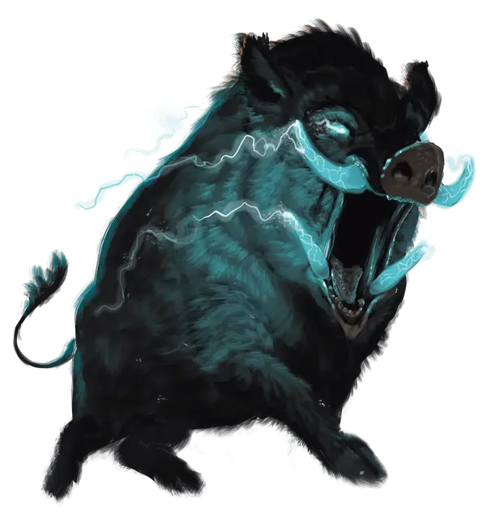

Горток, Громовой кабан
Gorthok the Thunder Boar
Огромный Монстр, хаотично-злой, именной НИП

Класс Доспеха 15 (природный доспех)
Хиты 73 (7к12 + 28)
Скорость 50 футов
| мод | спас | ||
|---|---|---|---|
| СИЛ | 20 | +5 | +5 |
| ЛОВ | 11 | +0 | +0 |
| ТЕЛ | 19 | +4 | +4 |
| мод | спас | ||
|---|---|---|---|
| ИНТ | 6 | −2 | −2 |
| МДР | 10 | +0 | +0 |
| ХАР | 14 | +2 | +2 |
Сопротивление урону дробящий, колющий, рубящий от немагических атак
Иммунитет к урону звук, электричество
Чувства тёмное зрение 60 футов, пассивное Восприятие 10
Опасность 6 (2300 опыта)
Бонус мастерства +3
Особенности
Неумолимый (перезаряжается после короткого или продолжительного отдыха). Если Горток получает 27 урона или меньше, уменьшающий его хиты до 0, на самом деле его хиты опускаются лишь до 1.
Действия
Мультиатака. Горток совершает две рукопашные атаки: одну Молниеносными бивнями и одну Громовыми копытами.
Молниеносные бивни. . Рукопашная атака оружием: +8 к попаданию, досягаемость 10 фт., одна цель. Попадание: 12 (2к6 + 5) рубящего урона плюс 7 (2к6) урона электричеством.
Громовые копыта. . Рукопашная атака оружием: +8 к попаданию, досягаемость 10 фт., одна цель. Попадание: 12 (2к6 +5) дробящего урона плюс 7 (2к6) урона звуком.
Молния (Перезарядка 6). Горток выпускает молнию в одно существо, которое он может видеть в пределах 120 футов от себя. Цель должна совершить спасбросок Ловкости Сл 15, получая 18 (4к8) урона электричеством при провале или половину этого урона при успехе.
Описание
Горток - принимающая форму кабана первобытная природная сущность, огромного как слон и с молниями, танцующими на его бивнях. Горток служит воле Талоса, бога штормов, и может быть призван в ненастную погоду для исполнения приказов злых последователей Талоса. Как и его божество-покровитель, Горток наслаждается хаосом и разрушениями.